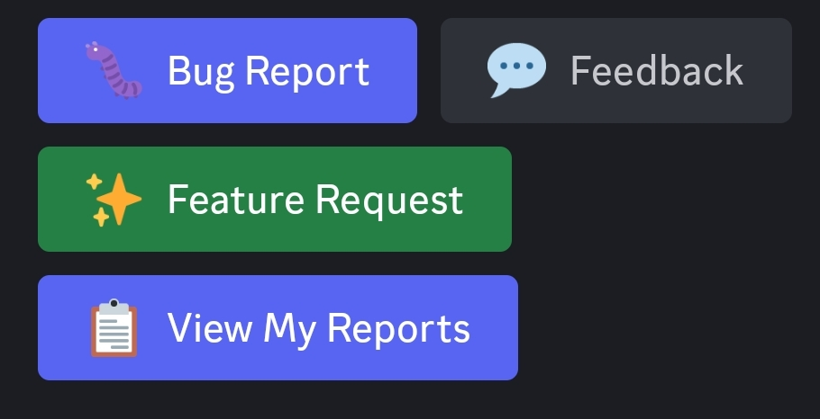

Ticket System¶
StarPilot thrives on the feedback and responsiveness of our community. If you are experiencing an issue, please open a ticket and share what you are seeing. The more people submitting feedback, the better your car (and everyone else's) can drive.
What is it?¶
The Discord ticket system is the main way to report problems and request support for StarPilot. Create a ticket if your car meets Comma's requirements but is not yet supported by StarPilot, if you experience ping-ponging or steering wobble, or if you encounter another issue that requires investigation. For basic configuration questions, ask in the appropriate public support channel instead. Firestar will review your ticket when available and may release an update to address the issue.
Before creating a ticket!¶
You must first be a member of the StarPilot Discord server.
Potential fixes are first released on the Dom branch. If you are using the Starpilot branch, you will need to switch to Dom to test the update.
How do I create a ticket?¶
- Open the StarPilot Discord.
- Go to the #submit-feedback-and-reports channel.
-
Select the appropriate report button.

-
Get your route information and upload your logs. Add that information to the form, describe the problem or requested feature in as much detail as possible, and select Submit.
Which button should I choose?¶
Bug Report
Use Bug Report when something is not working correctly. For example, use it if a steering-wheel button no longer works as expected.Feedback
Use Feedback for non-urgent tuning concerns, such as insufficient steering performance or steering wobble.Feature Request
Use Feature Request to suggest a new StarPilot feature. If you request a feature, be prepared to test it.View My Reports
Use View My Reports to see a list of your reports and their current status.Tip
If you can reproduce the issue, open a bookmark on your device shortly before it occurs and close the bookmark shortly afterward. Include the bookmark information in your ticket to help Firestar locate and investigate the issue.
How do I switch from the Starpilot branch to Dom?¶
You can switch branches through your Comma device or the Galaxy dashboard. You do not need to reinstall StarPilot.
Through your Comma device¶
- Open the device settings.
- Go to Software.
- Change Target Branch to Dom.
- Follow the on-screen instructions.
Through Galaxy¶
- Log in to your Galaxy dashboard.
- Open the navigation bar.
- Go to Software.
- Find Branch Switching and change the branch to Dom.
- At the bottom of the page, select Switch + Update.
Important
Your vehicle must be parked and your Comma device must be in offroad mode before you can switch branches.
Tip
If you do not want to remain on Dom, wait until the fix is included in the next StarPilot release. You can then follow the same process to switch back to the Starpilot branch.
What do the colored circles on my ticket mean?¶
Each colored circle represents the current status of your ticket.
| Color | Meaning | What you should do |
|---|---|---|
| 🟠 | Your ticket is new and has been submitted. | Wait for Firestar to review it. |
| 🟣 | Your ticket has been reviewed and a potential fix is ready. | Update Dom and test the fix. If the problem remains, submit a new route and updated logs. |
| 🔴 | Your ticket was sent back for further investigation. | Wait for the ticket to return to purple status. |
| 🟢 | You closed the ticket yourself. | No further action is required. |
| 🔵 | A staff member or the bot closed your ticket. | No further action is required. |